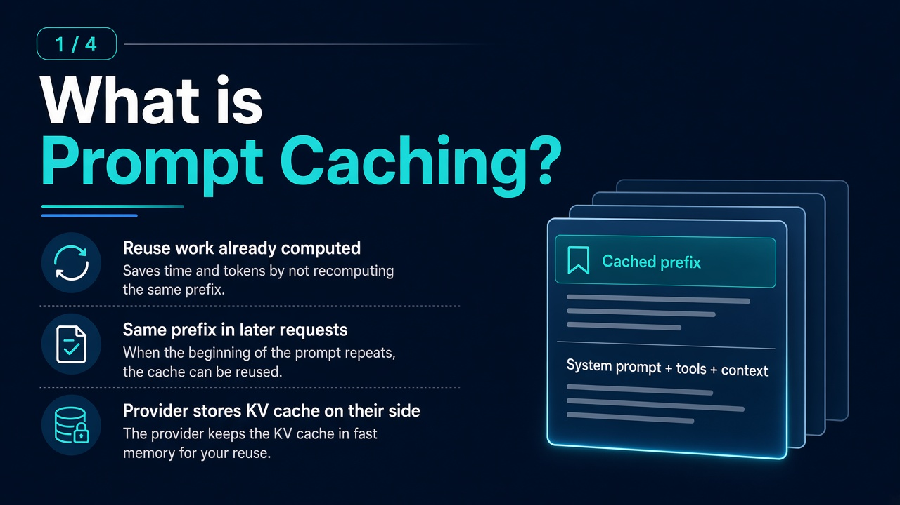
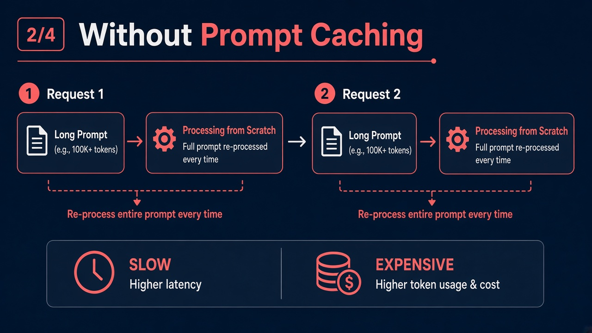
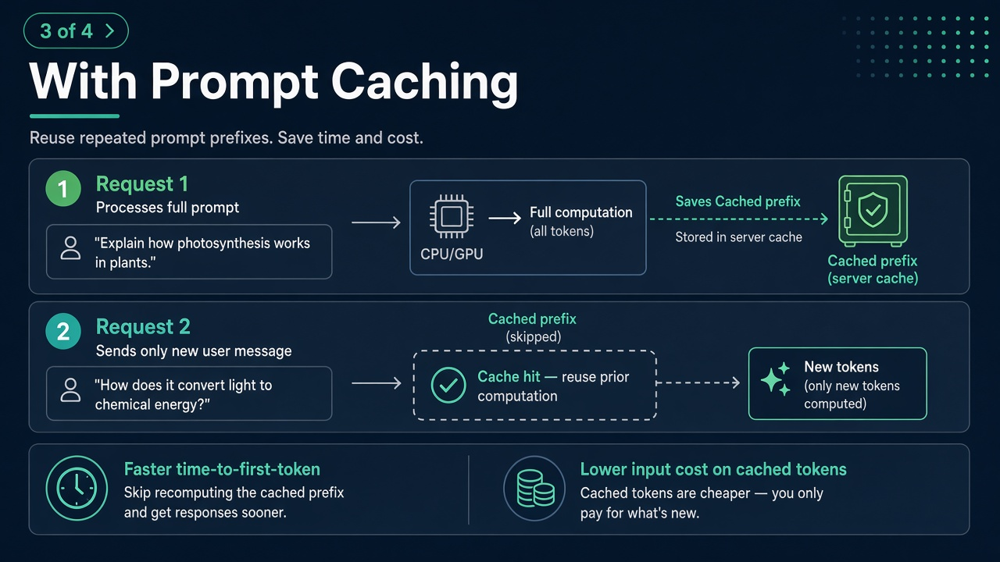
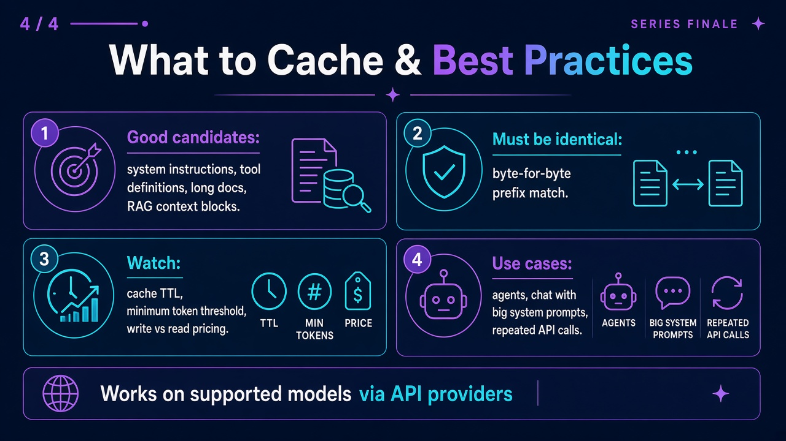

When the start of your prompt stays the same — system instructions, tool definitions, long context — the provider can reuse prior computation instead of re-processing the full prompt on every request. You get faster responses and often lower cost on repeat calls.
Visual walkthrough
Swipe or scroll sideways on smaller screens. Same series shared in the competency group.




Why it matters
| Benefit | What you notice |
|---|---|
| Lower cost | Cached input tokens are often billed less than uncached tokens on supported APIs. |
| Lower latency | Less work before the model starts generating (faster time to first token). |
| Better at scale | Agents, chat apps, and services that send the same large system prompt every turn. |
Without vs with (in one minute)
Every API or agent turn re-reads the full stack: system prompt, tools, documents, then the new user message.
The identical prefix is reused; only the suffix (e.g. latest user message or fresh RAG hits) is processed as new.
What you can do today
Put policies, tool lists, and long reference text in a fixed block; put the user question and session-specific data after it.
You do not toggle “caching” in the UI — but stable User Rules, project rules, and skills mirror the same idea: don’t re-paste the same instructions every chat.
Small edits, reordering, or extra whitespace in the cached section usually means a cache miss — the provider treats it as a new prompt.
Related tips: One task, one chat · Say what you don’t want
Advanced — APIs and billing
When you ship services on Claude, OpenAI, or similar:
- Mark long static blocks for caching where the API supports it (e.g. ephemeral cache control on Claude).
- OpenAI-style caching often applies automatically when the opening tokens match a recent request on supported models — still design prompts with a fixed prefix.
- Watch cache write vs cache read pricing, TTL (cache expiry), and minimum token thresholds.
Provider behaviour and pricing change — confirm against current official docs before production estimates.
We’ll go deeper on how this shows up in day-to-day tools and .NET services in upcoming competency sessions.